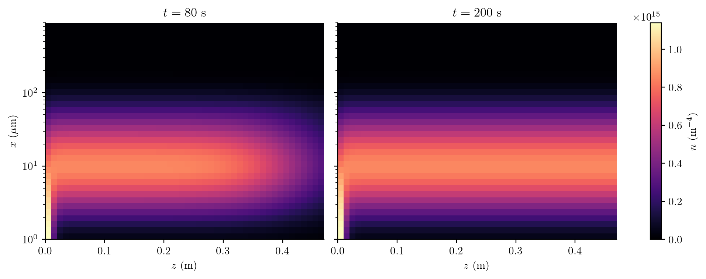
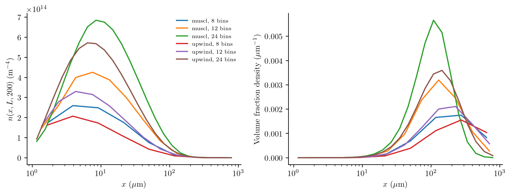
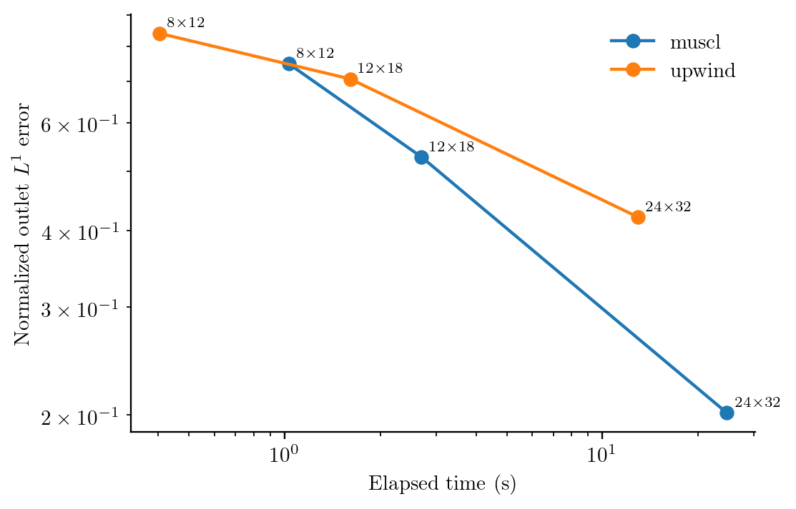

Precipitation in a continuous tubular reactor
A supersaturated feed enters a tube that initially contains no solute or particles. Nuclei form as the feed advances, crystals grow, and precipitation reduces the dissolved concentration. Axial dispersion spreads the residence-time distribution. The outlet PSD therefore depends on both reaction kinetics and mixing along the tube; a well-mixed batch model cannot describe its startup.
This calculation uses Case 7A of Zhang et al. (2024). It targets the transient fields and outlet distributions in Figure 9(a,c) and the error-versus-runtime comparison in Figure 10(a,b). It uses this package's upwind and MUSCL methods, rather than claiming to reproduce CADET's WENO35 algorithm or its computational times. Case 7B is not included: the printed lognormal centre needs an unambiguous conversion to SI units before it can be used as a reproduction input.
Model and boundaries
Let $n(x,z,t)$ be number density per reactor-fluid volume per particle length, $c(z,t)$ dissolved concentration, $x$ particle length and $z$ axial position. The particles obey
\[\frac{\partial n(x,z,t)}{\partial t} +v_{\mathrm{ax}}\frac{\partial n(x,z,t)}{\partial z} +\frac{\partial[G(z,t)n(x,z,t)]}{\partial x} =D_{\mathrm{ax}}\frac{\partial^2n(x,z,t)}{\partial z^2}.\]
Nucleation supplies the size-boundary flux
\[G(z,t)n(x_c,z,t)=B_0(z,t),\qquad B_0=k_p s^{u}+k_b s^{b}M,\qquad G=k_gs,\]
where
\[s(z,t)=\max\!\left(\frac{c(z,t)-c_{\mathrm{eq}}}{c_{\mathrm{eq}}},0\right), \qquad M(z,t)=\rho k_v\int_{x_c}^{\infty}x^3n(x,z,t)\,dx.\]
Primary nucleation starts the population. Secondary nucleation is proportional to the crystal mass concentration $M$. There is no aggregation, breakage or growth-rate dispersion in this case. The solute balance is
\[\frac{\partial c(z,t)}{\partial t} +v_{\mathrm{ax}}\frac{\partial c(z,t)}{\partial z} =D_{\mathrm{ax}}\frac{\partial^2c(z,t)}{\partial z^2} -\rho k_v\left[B_0(z,t)x_c^3+ 3\int_{x_c}^{\infty}G(z,t)x^2n(x,z,t)\,dx\right].\]
Both balances use Danckwerts inflow and a zero-gradient outlet:
\[v_{\mathrm{ax}}n(x,0,t)-D_{\mathrm{ax}}\frac{\partial n(x,0,t)}{\partial z}=0, \qquad \frac{\partial n(x,L,t)}{\partial z}=0,\]
\[v_{\mathrm{ax}}c(0,t)-D_{\mathrm{ax}}\frac{\partial c(0,t)}{\partial z} =v_{\mathrm{ax}}c_{\mathrm{feed}}, \qquad \frac{\partial c(L,t)}{\partial z}=0.\]
Initially $n(x,z,0)=0$ and $c(z,0)=0$. Concentrations are based on total process volume. The axial velocity is $Q/(A\varepsilon)$, not $Q/A$; porosity changes the residence time substantially.
| Input | Value and units |
|---|---|
| $c_{\mathrm{feed}}$, $c_{\mathrm{eq}}$ | 9, 0.4 kg m⁻³ |
| $\rho$, $k_v$ | 1200 kg m⁻³, 0.524 |
| $k_p$, $u$ | 5 m⁻³ s⁻¹, 10 |
| $k_b$, $b$ | 4×10⁸ kg⁻¹ s⁻¹, 2 |
| $k_g$ | 7×10⁻⁶ m s⁻¹ |
| $x_c$, $x_{\max}$ | 1, 900 µm |
| $Q$, $A$, $\varepsilon$ | 1.67×10⁻⁷ m³ s⁻¹, 1.46×10⁻⁴ m², 0.21 |
| $L$, $D_{\mathrm{ax}}$ | 0.47 m, 4.2×10⁻⁵ m² s⁻¹ |
These are supporting-information Table S8 inputs. The authors' public verification script confirms the empty initial state and porosity convention. Its flow uses exactly 10 mL/min; this script retains the SI table's rounded $Q$. The coefficients have the units above because $s$ is dimensionless.
Assemble local precipitation, then add axial transport
The kinetic callbacks read the local dissolved concentration. They do not need to know how the reactor is divided into cells:
supersaturation(p,ctx) = max(ctx.bulk.c/p.ceq-1,zero(ctx.bulk.c))
growth(x,p,t,ctx) = p.kg*supersaturation(p,ctx)
function nucleation(p,t,ctx)
s = supersaturation(p,ctx)
M = 1e12*p.rho*p.kv*moment(ctx.grid,ctx.N,3)
(p.kp*s^p.u + p.kb*s^p.b*M)/1e12
end
model = PBMModel(
growth=Growth(rate=growth),
primary_secondary=Nucleation(rate=nucleation,size=first(grid.edges)),
)
operator = compile(model,grid;methods=TermMethods(
growth=MUSCL(),by_term=(primary_secondary=BoundaryInjection(:left),)))
system = PBMSystem((crystals=operator,);nonnegative_bulk=(:c,),
exchanges=(ConservativeExchange(:crystals,:c,
(x,p,t,ctx)->1e12*p.rho*p.kv*x^3),))
local_problem = PBMProblem(system,(crystals=zeros(length(grid)),),(0.,200.);
bulk0=(c=0.,),p)
reactor = AxialDispersion(AxialGrid(range(0.,p.L;length=nz+1));
velocity=p.Q/(p.area*p.porosity),dispersion=p.Dax,
inlet=(p,t)->(populations=(crystals=zeros(length(grid)),),
bulk=(c=p.cfeed,)))
problem = axial_problem(local_problem,reactor;axial_scheme=MUSCL())For numerical scaling the internal particle counts are divided by $10^{12}$. The rate divides by that scale, the mass callback multiplies by it, and exported densities restore physical units. This changes no physical coefficient.
ConservativeExchange subtracts the resolved discrete crystal-mass increase from solute. This balances material exactly cell by cell before axial fluxes are added. At finite resolution it differs from separately quadraturing the continuum sink above, including the mass assigned to the first bin. That difference must shrink under size refinement; it is not evidence of a different physical source. The upper size boundary is closed. Check its occupancy before treating the finite-domain calculation as an approximation on an infinite size domain.
Startup, outlet and numerical performance


The fields distinguish the physical axial coordinate from particle size. The outlet plots use number density and a separately normalized volume-weighted density. Neither is a histogram of sampled particles.

Errors integrate the absolute outlet-density difference on the common partition of each grid and a finer MUSCL reference, then divide by the reference's number integral. The reference is numerical, not exact. The committed figure uses a small documentation budget; it demonstrates the comparison workflow, not a completed reproduction of all Figure 10 convergence curves. Elapsed times exclude a warmup but remain machine dependent. verification.txt records the reference mesh and a step-halving check. Reference spatial error remains to be assessed with a larger run.
julia --project=. examples/continuous_precipitation.jl
# Expensive size/axial refinement and the SI-scale reference:
julia --project=. examples/continuous_precipitation.jl --full
python docs/benchmarks/plot_new_case_studies.py precipitation --usetexThe driver selects an explicit step from size advection, axial advection and dispersion, and local solute depletion. It does not clip negative states. A fine logarithmic size mesh can make this expensive; the same assembled residual is available through odeproblem for a suitable implicit solver.
Complete runnable script
The code below is read from the example source during the documentation build. Run it from the repository root using the environment described above.
examples/continuous_precipitation.jl
module ContinuousPrecipitation
using PopulationBalanceModels
export parameters,build,run_benchmark
"""Case 7A, Zhang et al. (2024), SI Table S8; metres, seconds, kg/m³."""
parameters()=(cfeed=9.,ceq=.4,rho=1200.,kv=.524,kp=5.,u=10.,kb=4e8,b=2.,
kg=7e-6,xc=1e-6,xmax=900e-6,Q=1.67e-7,area=1.46e-4,porosity=.21,L=.47,Dax=4.2e-5)
supersaturation(p,ctx)=max(ctx.bulk.c/p.ceq-1,zero(ctx.bulk.c))
growth(x,p,t,ctx)=p.kg*supersaturation(p,ctx)
function nucleation(p,t,ctx)
s=supersaturation(p,ctx)
solid=1e12*p.rho*p.kv*moment(ctx.grid,ctx.N,3)
(p.kp*s^p.u+p.kb*s^p.b*solid)/1e12
end
"""Closed size domain; conservative discrete solute coupling; solute and particles share axial transport."""
function build(;nx=32,nz=48,scheme=Upwind(),axial_scheme=scheme,mesh=:log,p=parameters(),tf=200.)
mesh in (:log,:uniform) || throw(ArgumentError("mesh must be :log or :uniform"))
edges=mesh===:log ? exp.(range(log(p.xc),log(p.xmax);length=nx+1)) : collect(range(p.xc,p.xmax;length=nx+1))
grid=Grid1D(edges;coordinate=:length)
model=PBMModel(growth=Growth(rate=growth),primary_secondary=Nucleation(rate=nucleation,size=first(edges)))
op=compile(model,grid;methods=TermMethods(growth=scheme,by_term=(primary_secondary=BoundaryInjection(:left),)))
system=PBMSystem((crystals=op,);nonnegative_bulk=(:c,),
exchanges=(ConservativeExchange(:crystals,:c,(x,p,t,ctx)->1e12*p.rho*p.kv*x^3),))
localpb=PBMProblem(system,(crystals=zeros(nx),),(0.,tf);bulk0=(c=0.,),p)
z=AxialGrid(range(0.,p.L;length=nz+1))
domain=AxialDispersion(z;velocity=p.Q/(p.area*p.porosity),dispersion=p.Dax,
inlet=(p,t)->(populations=(crystals=zeros(nx),),bulk=(c=p.cfeed,)))
axial_problem(localpb,domain;axial_scheme)
end
# Strongly graded meshes and initial supersaturation bursts require small steps.
# This explicit driver chooses a conservative step at every state, including
# the local solute-consumption rate. It never clips populations or concentration.
function advance(problem,times;fraction=.3)
times=collect(times);u=copy(problem.u0);t=first(problem.tspan);op=problem.operator
grid=first(op.local_operators).system.populations.crystals.grid
p=problem.p;dz=minimum(op.domain.grid.widths);dx=minimum(grid.widths)
transport=op.domain.velocity/dz+2p.Dax/dz^2
cache=ntuple(_->similar(u),6);du=similar(u);states=typeof(u)[];steps=0
for target in times
while t<target
rhs!(du,u,op,p,t)
maxG=p.kg*max(maximum(bulk(problem,u,:c))/p.ceq-1,0)
h=fraction/(transport+maxG/dx+eps())
for j in axes(u,2)
c=bulk(problem,u,:c)[j];dc=bulk(problem,du,:c)[j]
dc<0 && (h=min(h,fraction*max(c-p.ceq,1e-5)/(-dc)))
end
h=min(h,target-t,.25)
h>1e-12 || throw(NumericalFailure("precipitation step collapsed; inspect the state"))
PopulationBalanceModels._rk_step!(u,cache,problem,t,h,SSPRK33(),true,1e-8)
PopulationBalanceModels._check_problem_state(problem,u,1e-8)
t=h==target-t ? target : t+h;steps+=1
end
push!(states,copy(u))
end
PBMSolution(times,states,problem,steps)
end
function outlet_error(problem,u,reference,v)
g=first(problem.operator.local_operators).system.populations.crystals.grid
gr=first(reference.operator.local_operators).system.populations.crystals.grid
# Compare both cell-average densities on their exact common partition.
e=sort!(unique(vcat(g.edges,gr.edges)));a=population(problem,u,:crystals)[:,end]./g.widths
b=population(reference,v,:crystals)[:,end]./gr.widths
total=0.;norm=0.
for i in 1:length(e)-1
x=(e[i]+e[i+1])/2;da=a[clamp(searchsortedlast(g.edges,x),1,length(g))]
db=b[clamp(searchsortedlast(gr.edges,x),1,length(gr))]
total+=abs(da-db)*(e[i+1]-e[i]);norm+=abs(db)*(e[i+1]-e[i])
end
total/norm
end
"""Figure-9-style fields/outlets and Figure-10-style measured error/runtime.
quick=true is a documentation budget; full mode is expensive and still needs
reference refinement. Timings describe this Julia implementation, not CADET.
"""
function run_benchmark(;output=joinpath(@__DIR__,"..","docs","src","assets","continuous_precipitation"),quick=true)
mkpath(output);p=parameters();levels=quick ? [(8,12),(12,18),(24,32)] : [(25,37),(50,75),(100,150),(200,300)]
refsize=quick ? (36,48) : (250,750)
reference=build(nx=refsize[1],nz=refsize[2],scheme=MUSCL());println("Reference ",refsize);flush(stdout)
ref=advance(reference,[80.,200.]);rf=last(ref.u)
open(joinpath(output,"field.csv"),"w") do io
println(io,"time,z_m,size_m,number_density,concentration_kg_m3,z_left,z_right,x_left,x_right")
g=first(reference.operator.local_operators).system.populations.crystals.grid
for (t,u) in zip(ref.t,ref.u),j in axes(u,2),i in eachindex(g.centers)
println(io,join((t,reference.operator.domain.grid.centers[j],g.centers[i],1e12*u[i,j]/g.widths[i],bulk(reference,u,:c)[j],reference.operator.domain.grid.edges[j],reference.operator.domain.grid.edges[j+1],g.edges[i],g.edges[i+1]),','))
end
end
open(joinpath(output,"outlets.csv"),"w") do oi
println(oi,"method,nx,nz,size_m,number_density,volume_density")
open(joinpath(output,"performance.csv"),"w") do pi
println(pi,"method,nx,nz,seconds,normalized_L1,steps")
for (label,scheme) in (("upwind",Upwind()),("muscl",MUSCL()))
# Compile a tiny run before timing; record warm elapsed times.
advance(build(nx=6,nz=6,scheme=scheme,tf=.01),[.01])
for (nx,nz) in levels
problem=build(;nx,nz,scheme);println(label," ",(nx,nz));flush(stdout)
elapsed=@elapsed solution=advance(problem,[200.])
u=last(solution.u);err=outlet_error(problem,u,reference,rf)
println(pi,join((label,nx,nz,elapsed,err,solution.steps),','))
g=first(problem.operator.local_operators).system.populations.crystals.grid
N=population(problem,u,:crystals)[:,end];volume=sum(N.*g.centers.^3)
for i in eachindex(N)
println(oi,join((label,nx,nz,g.centers[i],1e12*N[i]/g.widths[i],N[i]*g.centers[i]^3/(g.widths[i]*volume)),','))
end
end
end
end
end
# A separate refinement check prevents treating the reference as exact.
check=build(nx=refsize[1],nz=refsize[2],scheme=MUSCL())
half=advance(check,[200.];fraction=.15)
time_error=outlet_error(check,last(half.u),reference,rf)
write(joinpath(output,"verification.txt"),"Zhang et al. 2024 Case 7A; SI S8.\n"*
"Reference $(refsize), MUSCL; temporal step-halving L1 difference=$time_error.\n"*
"Finite reference, not an exact solution; refine both size and axial meshes.\n"*
"Solute exchange conserves the resolved discrete x^3 measure; differs from independently discretized continuum sinks at finite resolution.\n"*
"Case 7B is not claimed: the printed lognormal centre lacks an unambiguous SI conversion.\n"*
"Julia $(VERSION); full Figure 10 CADET scheme/timing reproduction is not claimed.\n")
(;reference=ref,time_error)
end
if abspath(PROGRAM_FILE)==@__FILE__;run_benchmark(quick=!("--full" in ARGS));end
end